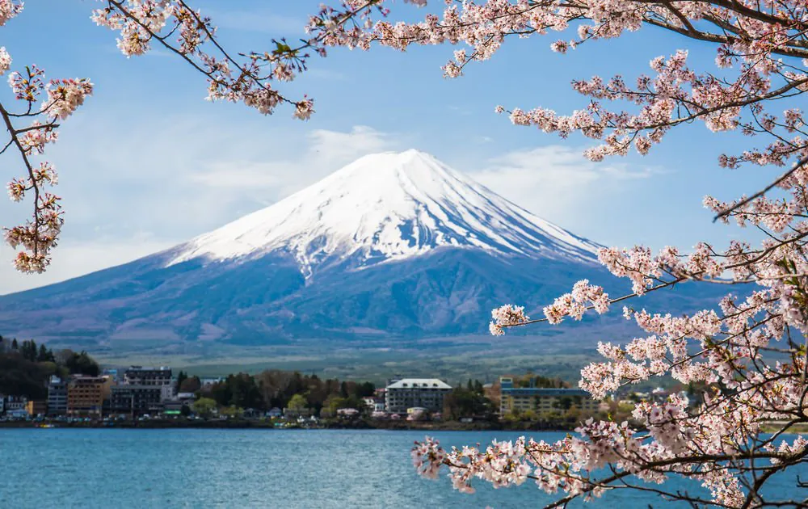
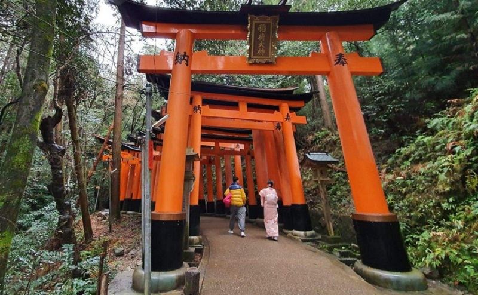
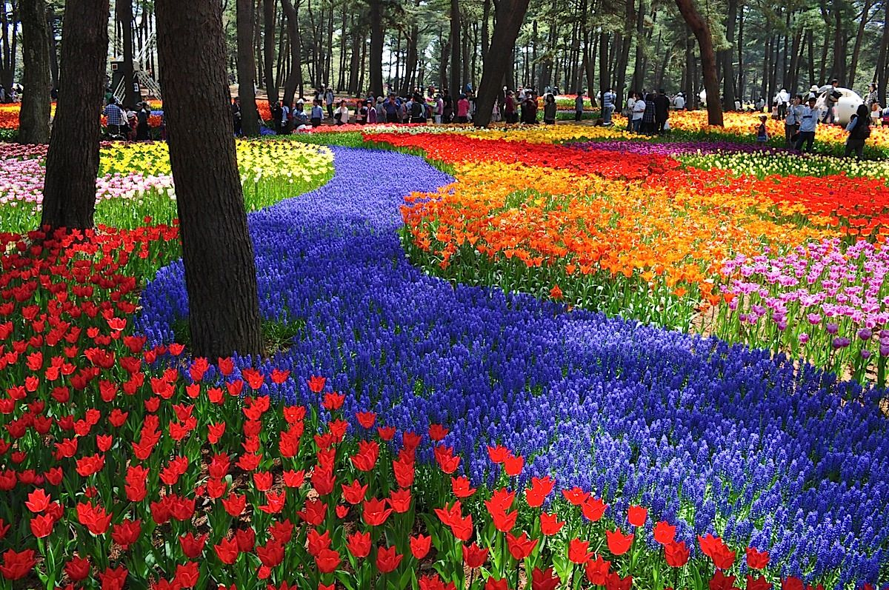
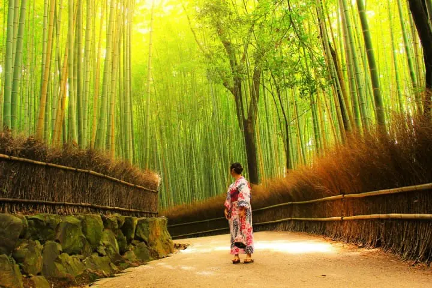

Wisata Jepang memang menjadi salah satu destinasi yang memikat dunia. Para pengunjung dari berbagai negara seringkali menjadikan 'Negeri Matahari Terbit' ini sebagai tujuan wisata. Jepang dikenal luas sebagai salah satu negara dengan budaya yang unik dan menarik. Beberapa di antaranya yakni seperti suasana tradisionalnya yang masih cukup kental, anime, hingga kedisiplinan warganya yang dikenal dengan baik. Tak hanya budaya, penampakan alam di Jepang pun juga tak kalah menarik.
Terdapat berbagai lokasi di Jepang yang masih asri dan mampu memanjakan mata Anda. Berikut adalah beberapa objek wisata Jepang yang saya rangkum dari berbagai sumber. Gunung Fuji adalah salah satu ikon dari Jepang yang tak boleh dilewatkan keindahannya. Meskipun panorama Gunung Fuji bisa terlihat dari kejauhan di Tokyo, namun untuk menikmati keindahan dari objek wisata Jepang satu ini, para pengunjung juga bisa mendakinya. Mendaki gunung Fuji, pada ketinggian 1000 meter akan terlihat lima buah danau yang panoramanya tak kalah indah. Selain danau, terdapat juga rest area di mana para pengunjung bisa menemukan camping ground, museum, tempat pemancingan, hingga onsen atau tempat pemandian air hangat alami.
Liburan ke Jepang, objek wisata satu ini kerap masuk dalam daftar wajib, khususnya Toppers penggemar dari Disney. Dengan berbagai wahana rekreasi, menjadikan Tokyo Disneyland dan DisneySea salah satu taman hiburan dengan pengunjung terbanyak ke-4 di dunia.
Jika berkunjung ke Kuil Fushimi, jangan lupa untuk berfoto di Senbon Torii, deretan gerbang berwarna kemerahan yang memang menjadi daya tarik wisata dari Kuil ini. Destinasi wisata Jepang yang berada di Kyoto ini tak hanya terkenal sebagai destinasi yang instagramable, tapi juga merupakan pusat dari puluhan ribu kuil Inari yang tersebar di seluruh Jepang. Tak heran jika kuil kuno yang juga dipercaya mampu mendatangkan keberuntungan ini tak pernah sepi dari pengunjung.
Berlokasi hanya dua jam dari Tokyo, Hitachi Seaside Park atau Hitachi Kaihin Koen dalam bahasa Jepang adalah obyek wisata terpenting dan paling terkenal di Prefektur Ibaraki. Taman seluas hampir 200 hektar ini berada tepi Samudera Pasifik dan sudah dibuka untuk umum sejak tahun 1991. Disini ada jutaan tanaman bunga yang mekar di musim yang berbeda-beda, menjadikan Taman Hitachi dapat dinikmati sepanjang tahun dengan pesona dan kecantikan yang berbeda-beda setiap musimnya. Ada bunga bakung dan tulip yang mekar di musim semi. Kemudian bunga nemophilia dan zinnia yang mekar di musim panas. Dan bunga kochia dan kosmos yang mekar di musim gugur.
Hutan bambu Arashiyama adalah destinasi liburan di Jepang lainnya yang sangat ikonik di mana para pengunjung akan diajak menyurusi rimbunnya hutam bambu yang sanat asri dan berjejer rapi membentuk jalan setapak.